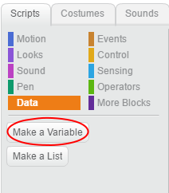
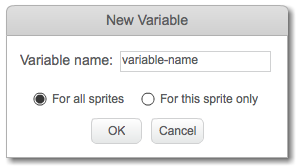
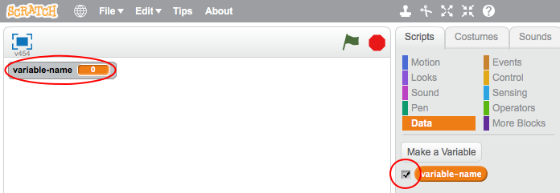
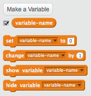

Click on Data in the Scripts tab, then click on Make a Variable.

Type in the name of your variable. You can choose whether you would like your variable to be available to all sprites, or to only this sprite. Press OK.

Once you have created the variable, it will be displayed on the Stage, or you can untick the variable in the Scripts tab to hide it.

New blocks will appear and allow you to change the value of the variable.
